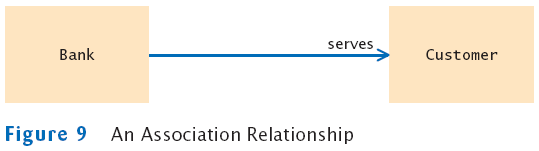

Aggregation and Association
- Association: more general relationship between classes
- Use early in the design phase
- A class is associated with another if you can navigate from
objects of one class to objects of the other
- Given a Bank object, you can navigate to Customer
objects
